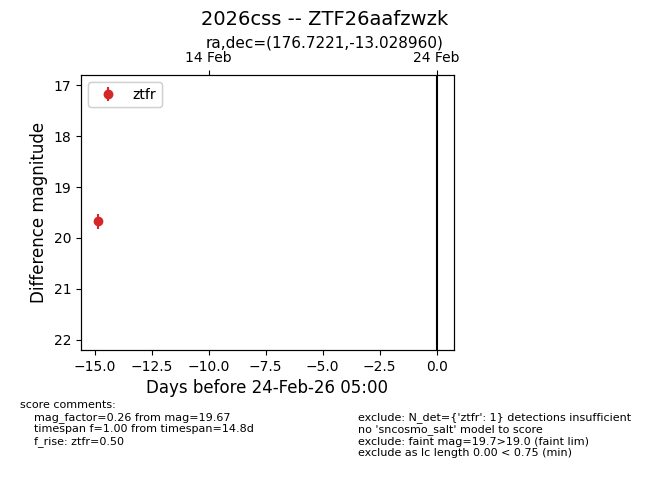
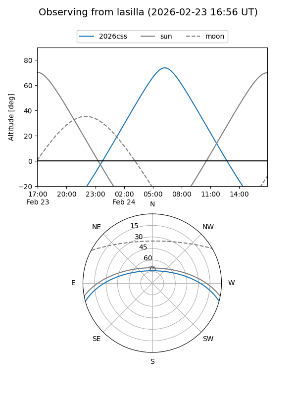
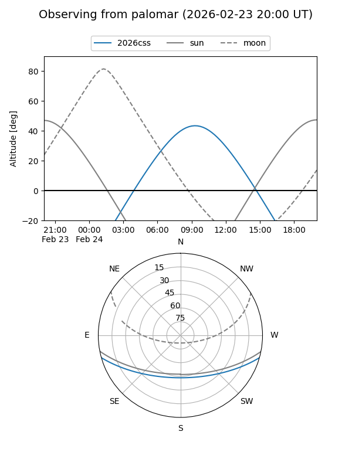

2026css
Target 2026css at 2026-02-24 09:08
Aliases and brokers:
FINK: link
Lasair: link
ALeRCE: link
TNS: link
YSE: link
alt names
ZTF26aafzwzk (ztf,fink_ztf)
2026css (tns,yse)
Coordinates:
equatorial (ra, dec) = 176.7221,-13.02896
equatorial (HMS+DMS) = 11:46:53.31,-13:01:44.26
galactic (l, b) = (279.5863,+46.89590)
Flags:
Photometry:
last ztfr=19.67
1 ztfr detections
Lightcurve

Visibility


Additional plots